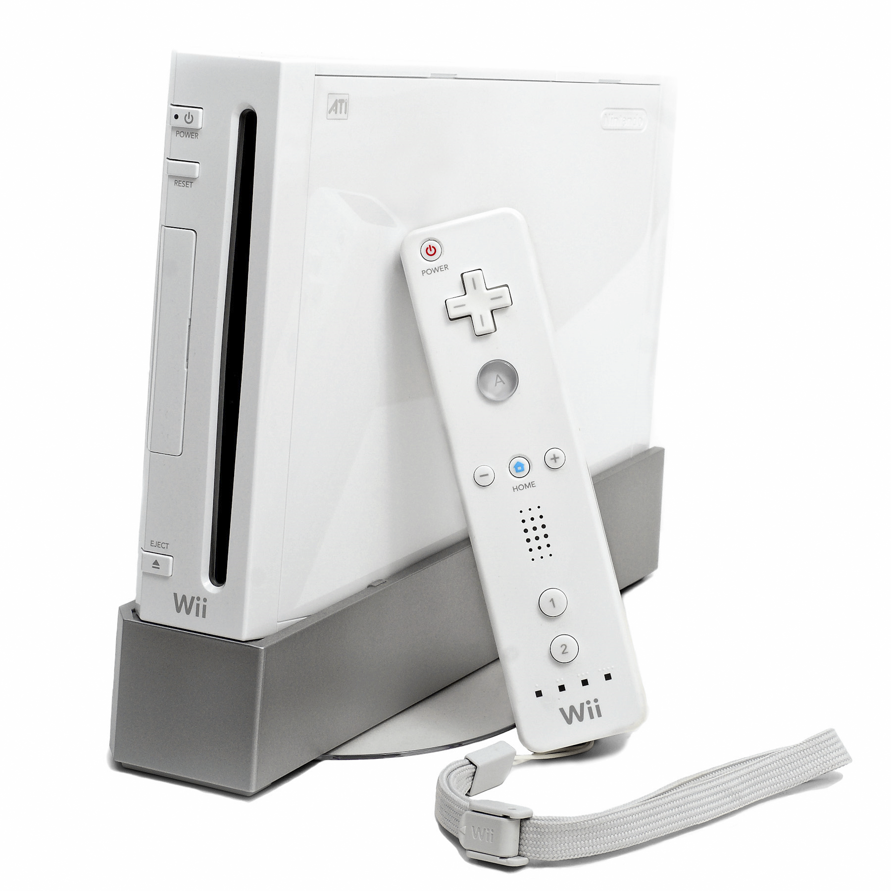
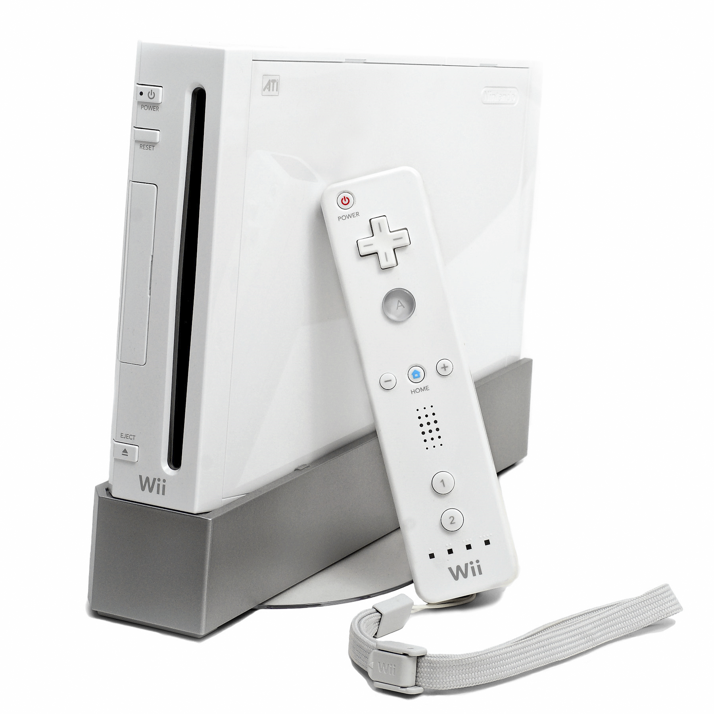

Some fans considered this era to be the golden-era of Nintendo due to new innovations on new consoles and for producing many fun, engaging games. Nintendo released 4 consoles in this era.
Nintendo Gamecube
Launch Year: 2001
Notable Games: Super Smash Bros. Melee, Super Mario Sunshine, Luigi's Mansion
Summary: It faced tough competitions such as PlayStation 2 and Xbox when it was released. While it released a few popular franchise games such as Mario and Zelda games, it only helped initial sales. As a result, it only managed to sell approx 22 million units. It was regarded as a failure due to its low sales and terrible hardware design with people criticizing/branding it 'kiddie' choice. Some fans however still considered it a iconic console.
Game Boy Advance
Launch Year: 2001
Notable Games: Pokemon Emerald, Golden Sun, Harvest Moon: Friends of Mineral Town
Summary: Game Boy Advance(GBA) is an upgraded version of Game Boy Color which gives better graphics and wider range of colors. While there is not a huge difference between older versions of Game Boy, it helped created new original games such as Harvest Moon, Advance Wars, etc. Huge franchise games such as Pokemon also helped boost its sales. It sold around 81 million units.
Nintendo DS
Launch Year: 2004
Notable Games: Pokemon Platinum, Mario Kart DS, The World Ends With You, Chrono Trigger
Summary: Nintendo DS introduced dual-screen setup with touch-screen at the bottom screen creating new ways to play games. It created touch-screen games before the age of smartphones. In the beginning of the launch, it was ridiculed due to its weird design and no-one believed that touch-screen gaming can work. However, it was quickly proven wrong with many games relying on touch-screen,such as Pokemon Platinum, Nintendogs, being produced and being popular with various audiences. Some versions of DS have backwards compatibility with GBA. In the end, Nintendo DS is Nintendo's best-selling game console of any kind with around 154 million units sold.
Wii
Launch Year: 2006
Notable Games: Wii Sports, Mario Kart Wii, Wii Play
Summary:It introduced motion-controlled games. Just like Nintendo DS, in the beginning it was ridiculed but audiences enjoyed these brand new games such as Wii Sports and enjoyed playing a new type of gaming using motion controllers. It became a huge success as it sold more than its rival PlayStation 3 and Xbox 360 with 101 million units sold. It was also hugely popular with families, kids and non-gamers.
 
